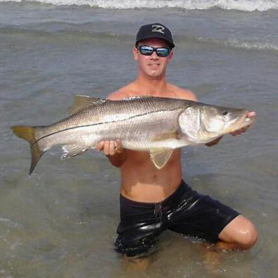
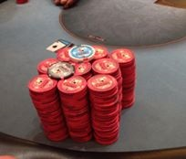

I absolutely love the outdoors! Some of my most enjoyable hobbies are fishing, diving, golf, baseball and surfing. I learned how to surf in high school on the beaches of Anna Maria Island. Since the gulf coast is generally flat with a few exceptions, cold fronts and hurricane swells, my friends and I would travel across the state to the Atlantic frequently. I have surfed up and down the east coast, all the way up to New York, and visited Central America on surf trips. When the surf is flat I love to fish, especially in the summer months for snook.

One of my favorite, yet challenging, hobbies I love to do is golf. I started golfing in high school for a few years, but never picked up a club until about 8 years later. It took me a lot of time and patience to get back into the "swing" of things. I use golf as a way to clear my mind of the varying stresses of life and work. Lastly, my favorite sport is baseball. I am a die hard New York Mets fan! I mark my calender every year when I see their upcoming series with the Marlins, and try my best to see as many games as possible.
Poker
My journey with poker started at the end of high school. I was just playing casually with a group of friends for very small stakes, mostly for fun. Once I moved to Boca Raton for college, I took notice to the vast selection of casinos in the area. I didnt really play too often since I was focused on my studies, but I did manage to play online when I had the free time. That was back in the good old days when the poker boom took over America. Fast forward to 2014 when I decided to take poker a little more serious. I left my engineering job to pursue another job offer I had received back on the west coast of Florida, which seemed more promising than what I was currently doing. Needless to say, it turned out to be a bust and I was left with no job to pay the bills.

This is when I started playing full time, mostly online, while I looked for another job. My schedule consisted of eight hour days, six days a week. I succeeded for 3 months before I received another job offer back over in Boca Raton. I weighed my options, and felt it was a safer approach to living with a guaranteed income. I still find time to play the game I love, but right now I am more focused on getting my degree and having a much higher income to live off of.